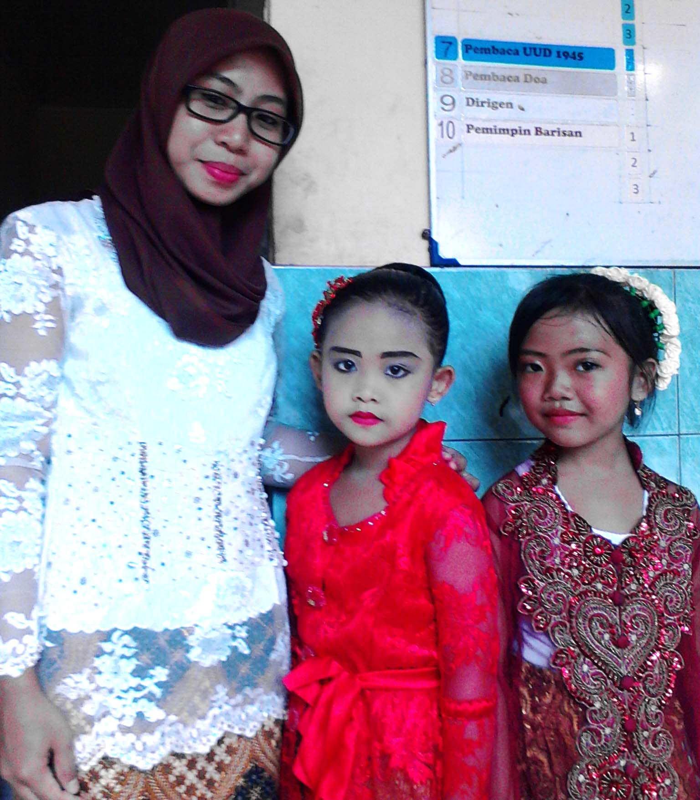

Raden Ajeng Kartini, lebih dikenal sebagai RA Kartini, lahir pada 21 April 1879 di Jepara, Jawa Tengah, Indonesia, dan meninggal pada usia muda, 17 September 1904. Dia adalah seorang pahlawan nasional Indonesia yang dikenal karena perjuangannya dalam memperjuangkan hak-hak pendidikan dan emansipasi bagi wanita Indonesia pada masa kolonial Belanda.
Kartini tumbuh dalam lingkungan bangsawan Jawa yang memiliki tradisi yang cukup ketat terkait peran dan status sosial wanita. Namun, Kartini memiliki hasrat yang kuat untuk belajar dan memperoleh pendidikan yang lebih tinggi daripada yang biasanya diberikan kepada wanita pada masanya. Meskipun terbatas oleh norma sosial dan budaya, Kartini berhasil memperoleh pendidikan dasar yang cukup bagus melalui dukungan keluarganya.
Silsilah Keluarga
Moenah: Moenah adalah ayah RA Kartini. Dia adalah seorang bupati (pejabat pemerintah setempat) di Jepara, Jawa Tengah. Ayahnya sangat mendukung semangat belajar dan pembelajaran Kartini, meskipun pada umumnya norma sosial saat itu membatasi pendidikan wanita.
Ngasirah: Ngasirah adalah ibu RA Kartini. Dia adalah istri dari Moenah. Meskipun dalam budaya tradisional Jawa, perempuan umumnya berperan dalam pekerjaan rumah tangga dan merawat anak-anak, ibu Kartini berusaha mendukung semangat belajar putrinya.
Roekmini: Roekmini, atau yang lebih dikenal dengan sebutan Mbok Roek, adalah kakak RA Kartini. Mbok Roek juga sangat mendukung dan mendampingi Kartini dalam semangat belajar dan pemikirannya tentang emansipasi wanita. Kartini dalam surat-suratnya sering merujuk pada Mbok Roek sebagai teman dan penasehatnya.
Kartono: Kartono adalah adik laki-laki RA Kartini. Dia juga mendukung perjuangan dan gagasan Kakaknya tentang pendidikan dan emansipasi wanita.
Anggota keluarga tersebut berperan penting dalam membentuk pandangan dan semangat RA Kartini dalam memperjuangkan hak-hak dan kesempatan bagi wanita. Mereka memberikan dukungan dan lingkungan yang relatif positif bagi Kartini untuk mengejar pendidikan dan pemikirannya yang progresif. Meskipun demikian, Kartini tetap harus menghadapi norma sosial dan budaya yang konservatif pada zamannya.
Salah satu wawasannya yang paling terkenal adalah tentang pentingnya pendidikan untuk wanita. Dia berjuang untuk mengubah pandangan masyarakat terhadap perempuan, yang pada saat itu umumnya hanya diperbolehkan untuk menjalani peran domestik dan keluarga. Kartini percaya bahwa pendidikan adalah kunci untuk membebaskan wanita dari keterbatasan tersebut dan memungkinkan mereka untuk berkontribusi secara lebih signifikan dalam masyarakat.
Kartini juga terkenal karena korespondensinya yang luas, di mana dia menulis surat-surat kepada teman-temannya dan juga kepada orang-orang Belanda yang mengenalnya. Surat-surat ini kemudian diterbitkan dalam buku yang dikenal dengan judul "Habis Gelap Terbitlah Terang" yang memberikan wawasan mendalam tentang pandangan, aspirasi, dan perjuangan Kartini.
Meskipun RA Kartini meninggal pada usia yang relatif muda, pengaruhnya terhadap perjuangan emansipasi wanita dan pendidikan tetap berlanjut. Setelah Indonesia meraih kemerdekaannya, Kartini dianggap sebagai simbol perjuangan untuk kesetaraan gender dan pendidikan, dan hari kelahirannya, 21 April, dirayakan sebagai Hari Kartini di Indonesia, di mana banyak perempuan mengenakan pakaian tradisional untuk menghormatinya dan menghargai perjuangannya.
Peringatan Hari Kartini
Hari Kartini, yang diperingati setiap tanggal 21 April di Indonesia, adalah untuk mengenang dan menghormati perjuangan serta sumbangan RA Kartini dalam memajukan pendidikan dan emansipasi wanita. Tanggal ini dipilih karena merupakan tanggal kelahiran RA Kartini.
RA Kartini lahir pada 21 April 1879 di Jepara, Jawa Tengah. Dia adalah seorang tokoh yang sangat berperan dalam mengubah pandangan tentang peran dan hak wanita di masyarakat Indonesia. Kartini menginspirasi banyak orang dengan pemikiran-pemikirannya tentang pentingnya pendidikan untuk wanita dan perlunya memberikan kesempatan kepada mereka untuk berkembang dan berkontribusi dalam masyarakat.
Memilih tanggal kelahiran RA Kartini sebagai Hari Kartini adalah cara untuk menghormati warisan dan perjuangan beliau, serta untuk terus mengingat pesan-pesan penting yang dia sampaikan. Peringatan ini juga berfungsi sebagai kesempatan untuk merayakan prestasi perempuan dalam berbagai bidang serta untuk mengingatkan masyarakat tentang pentingnya kesetaraan gender dan pendidikan bagi perkembangan bangsa.
Pada Hari Kartini, banyak sekolah, lembaga pemerintah, dan organisasi di Indonesia mengadakan berbagai acara untuk memperingati dan mempelajari nilai-nilai yang diwariskan oleh RA Kartini. Selain itu, banyak perempuan memakai pakaian adat atau busana Jawa sebagai penghormatan kepada RA Kartini dan semangat perjuangannya.
SD Negeri 1 Mantingan
Kegiatan diawali dengan upacara perayaan Hari Kartini dengan para siswa yang menjadi petugas upacara. Acara menjadi lebih istimewa lagi karena para guru, karyawan, dan siswa memakai pakaian daerah-daerah di Indonesia. Siswa – siswi diajak untuk lebih meneladani semangat Kartini dan menunjukkan aktualisasi diri melalui parade pakaian daerah dari setiap kelas dan lomba fashion show. Para siswa didampingi wali kelasnya berjalan mengelilingi lapangan dengan penuh percaya diri. Parade pakaian daerah dilanjutkan dengan lomba fashion show yang diwakili sepasang siswa-siswi dari tiap kelas. Kegiatan dilanjutkan dengan lomba di kelas masing – masing.
 Posted by Rahma Nur FadlilaSerangkaian acara Perayaan Kartini diharapkan bukan sekedar menjadi moment tahunan namun benar-benar dapat berkesan bagi siswa-siswi sekolah kami agar dapat lebih menghargai jasa para pahlawan khususnya para pahlawan wanita sehingga dapat lebih berjuang dalam mencapai cita-cita seperti RA Kartini.